HeyArya!
HeyArya!
A bilingual math platform putting students in the chair, with Feynman & Curie as co-conspirators!
A bilingual math platform putting students in the chair, with Feynman & Curie as co-conspirators!
Schools & implementation partners
Shared by HeyArya! and the Live the Learning Guide
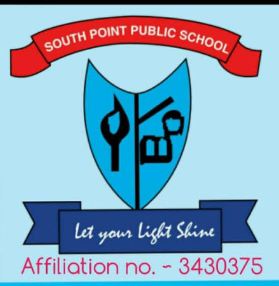
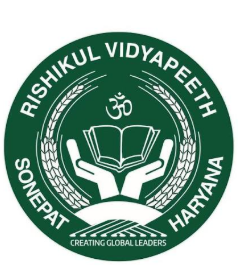
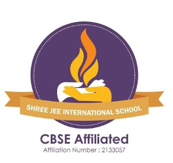
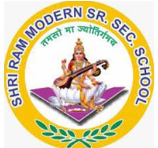
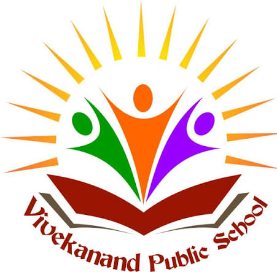
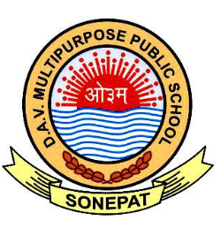
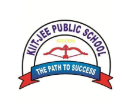
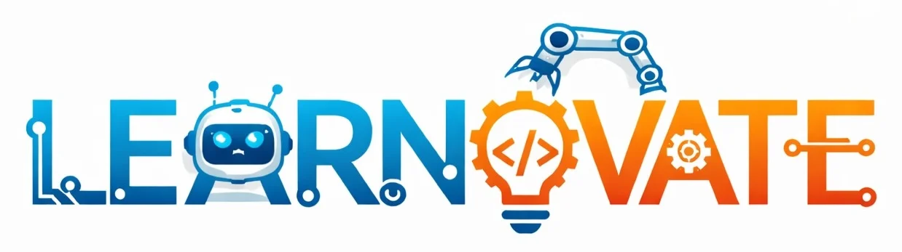
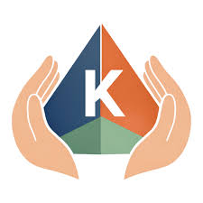
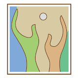
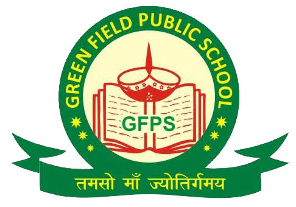
My assistive-technology work includes two wearable communication systems and a tactile navigation stick, each with a separate patent application: 202611103635, 202611103628, and 202611120625. At Saksham, I also led 50 volunteers on mentoring programs and school systems across government-school partners.
The work reached more than 300 students across 10 schools. In school use, the navigation stick reduced average corridor navigation time by 60%. I raised $1,200 to equip a science lab at a partner school.


Smart glasses that turn printed text and lip-read speech into tactile Morse-code messages.
A scene classifier switches between text recognition and visual speech recognition. The glasses send recognized words through temple vibrations, with adaptive Morse-code pacing and priority handling for urgent messages.
Application No. 202611103635A cap-based visual communication aid for deaf and hard-of-hearing users.
The application describes lip-reading alongside visual emotion cues, with information delivered through haptic alerts and optional bone-conduction audio.
Application No. 202611103628A cane that communicates object type, distance, and direction through haptic zones in the handle.
The application describes camera and depth sensing, object prioritization, and distinct alerts for ground-surface hazards.
Application No. 202611120625A separate project recognized with the IIT KGP YIP Grand Prize in 2024.